"Empowering women to lead AI innovation, influence governance, and shape socially responsible AI for Morocco and the Global South."
A transformative platform advancing women's leadership in artificial intelligence, jointly organized by MoroccoAI and GIZ WoMENA.
Building on the success of its first edition — "AI Policies: Between Innovation and Regulation" — the 2nd edition of Morocco's AI Forum deepens the conversation by focusing on Women's Leadership in AI: From Inclusion to Impact.
This second edition shifts attention to who shapes AI systems and to what end, recognizing leadership as a decisive factor in translating policy into real-world outcomes. It serves as a strategic platform dedicated to strengthening women's leadership in AI across Morocco and the broader Global South.
Grounded in the conviction that women's leadership is a catalyst for impact, the forum moves beyond symbolic representation toward measurable outcomes — recognizing women as designers, policymakers, researchers, entrepreneurs, and users of AI.
The forum directly supports Morocco's New Development Model (NDM), Maroc Attamkine, and the Digital Morocco 2030 strategy, including the AI Made in Morocco initiative launched in January 2026.
Conceived as a sustained knowledge-sharing and action-oriented platform designed to create lasting impact across countries and generations.
Advance women's leadership in AI innovation and decision-making across sectors and institutions, creating pathways for women to influence strategic technological choices.
Tackle cultural, institutional, and structural obstacles specific to Morocco and the Global South that prevent women from fully participating in AI ecosystems.
Encourage women's participation in AI governance, standards, and policy-making bodies to ensure inclusive and equitable frameworks for AI development.
Address social norms and gender bias in AI systems to ensure culturally aware, socially responsible technology that maximises positive human impact.
Enable South–South and South–North knowledge sharing and collaboration, creating bridges for learning and partnership across regions.
Lay groundwork for scalable initiatives including competitions, hackathons, and mentorship programs that will extend the forum's impact beyond the event itself.
Three concrete deliverables that will emerge from this transformative gathering.
An expanding Governance and Advisory Board of women AI leaders and allies, empowered to drive AI innovation within organizations, influence global standards, and shape inclusive AI across their countries.
Concrete policy and leadership recommendations, driven by women's insights, to influence AI standards, governance, and ensure socially responsible AI development tailored to cultural and regional contexts.
Strong foundations for the launch of action-oriented initiatives including competitions & hackathons, mentorship, and capacity-building programs designed to further women's agency in leading AI innovation.
The forum is structured around three interconnected pillars addressing the full spectrum of women's leadership in AI — from societal trends and challenges to institutional governance and organizational power.
Examine how women's leadership shapes AI systems that are socially responsible, culturally aware, and designed to reduce bias and maximize positive societal impact. Address the intersection of technology, culture, and human values.
Explore how women leaders contribute to AI governance, policy, and standards-setting, ensuring ethical, inclusive, and trustworthy AI development. Examine the mechanisms for increasing women's participation in regulatory and governance bodies.
Highlight how women in executive, technical, and strategic roles influence AI innovation, drive performance, and shape organizational decisions. Explore the pathways and practices that enable women to rise to leadership positions in AI-driven environments.
Watch highlights from the forum's sessions.
The team behind Morocco's AI Forum 2026.
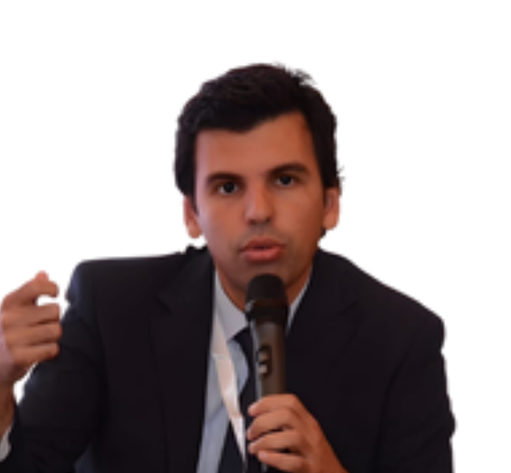
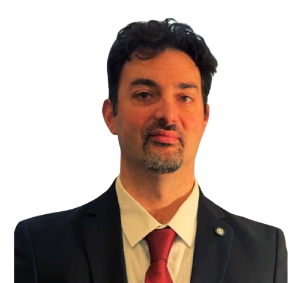
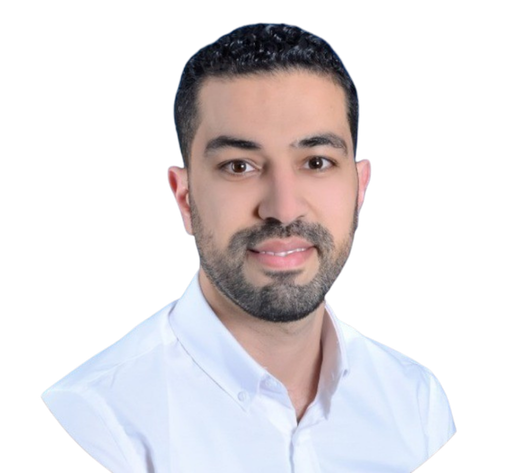
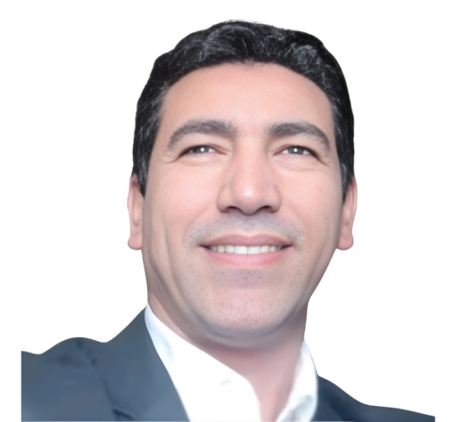
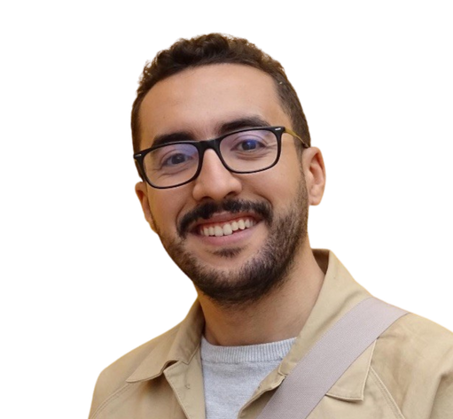
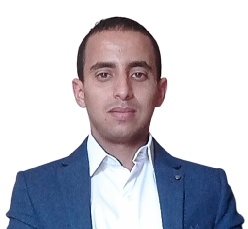
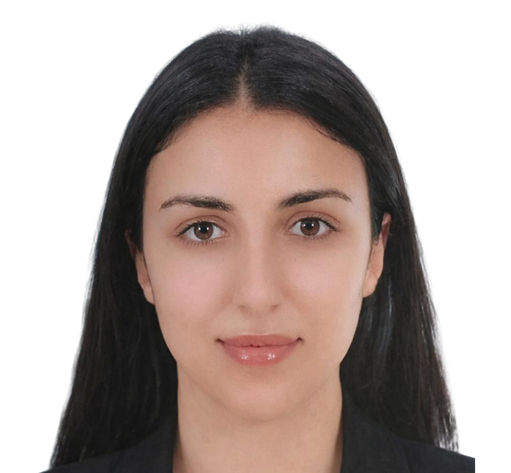
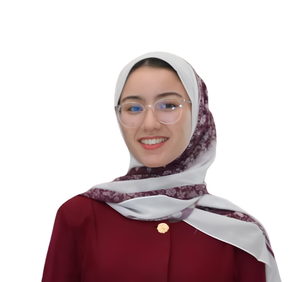
An exceptional lineup of women leaders, policymakers, researchers, and innovators from Morocco and around the world.
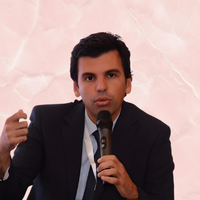
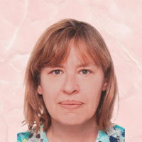
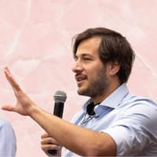
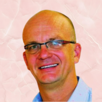
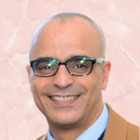
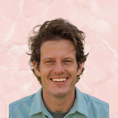
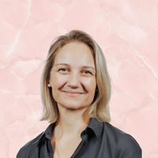
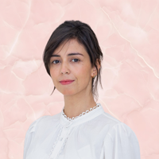
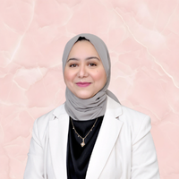
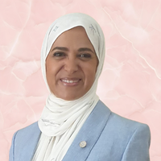
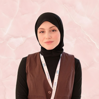
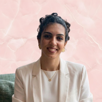
A full day of high-impact panels, networking, and strategic dialogue — Tuesday, 14 April 2026.
Networking, registration, and welcome refreshments
Forum Co-Chair; President, MoroccoAI
Forum Co-Chair; Head of Project WoMENA, GIZ
Deputy Head of Development Cooperation, German Embassy in Rabat
Global President, Women in AI; Co-Chair, UNESCO Women for Ethical AI
"At the table and in the room: shaping AI to be more inclusive and impactful"
Highlighting women's leadership in ensuring AI serves diverse communities and addresses social equity responsibly.
Informal networking and discussions
Examining women's critical role in shaping AI policy, regulations, and ethical frameworks to ensure responsible development.
Building connections for future collaboration
Exploring how women drive AI strategy, implementation, and transformative innovation within organizations.
Constitution of the Board, key takeaways, and future announcements
The forum is jointly organized by MoroccoAI and GIZ WoMENA (German Cooperation), with support from key institutional partners.
Join us in the heart of Morocco's capital city for a day of transformative dialogue.
An elegant and contemporary venue in Rabat, Morocco's capital, offering an inspiring setting for high-level dialogue and networking among leaders, policymakers, and innovators.
The Forum invites leaders, policymakers, researchers, entrepreneurs, and advocates to join this transformative movement. Together, we will empower women to lead AI innovation, influence governance, and shape inclusive AI for all of society.